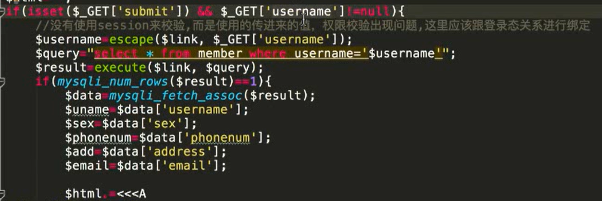

越权漏洞
由于没有用户权限进行严格的判断 导致低权限的账号(比如普通用户)可以去完成高权限账号(比如超级管理员)范围内的操作。
- 平行越权：
A用户和B用户属于同一级别用户，但各自不能操作对方个人信息，
平行越权操作：A用户如果越权操作B用户的个人信息的情况
- 垂直越权：
A用户权限高于B用户，B用户越权操作A用户的权限
越权漏洞属于逻辑漏洞，是由于权限校验的逻辑不够严谨导致。
每个应用系统其用户对应的权限是根据其业务功能划分的，而每个企业的业务又都是不一样的。
因此越权漏洞很难通过扫描工具发现出来，往往需要通过手动进行测试。
水平越权
在URL里把名字改成另一个人

垂直越权
超级管理员新增账号，退出，普通管理员重放